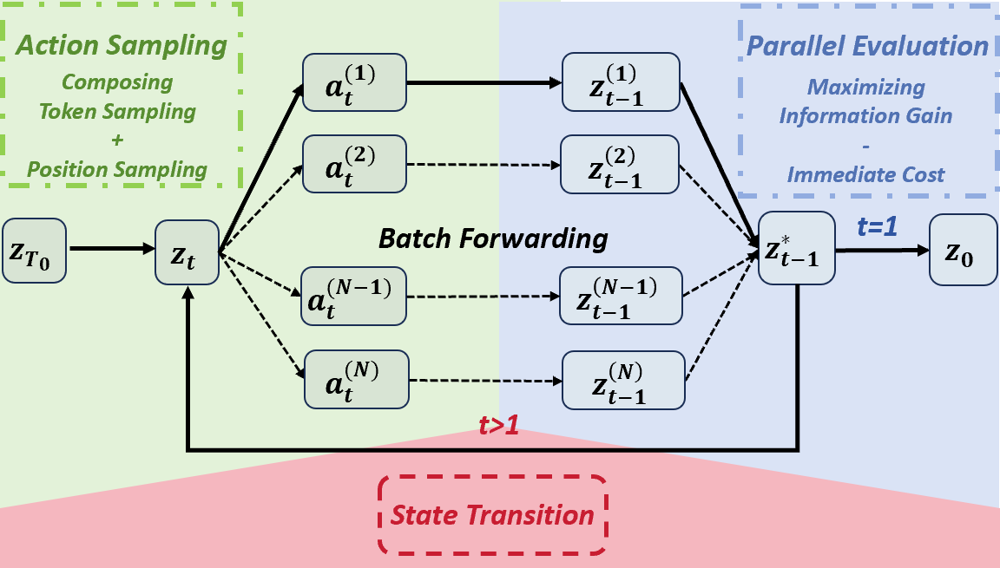
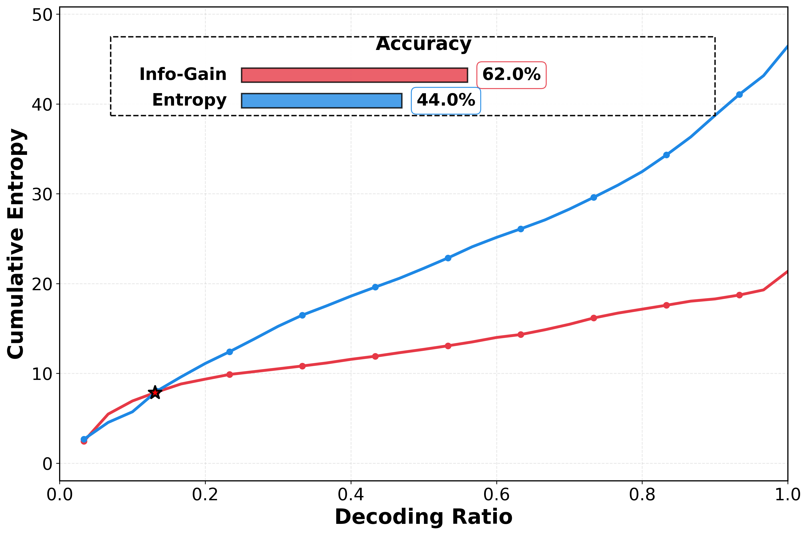
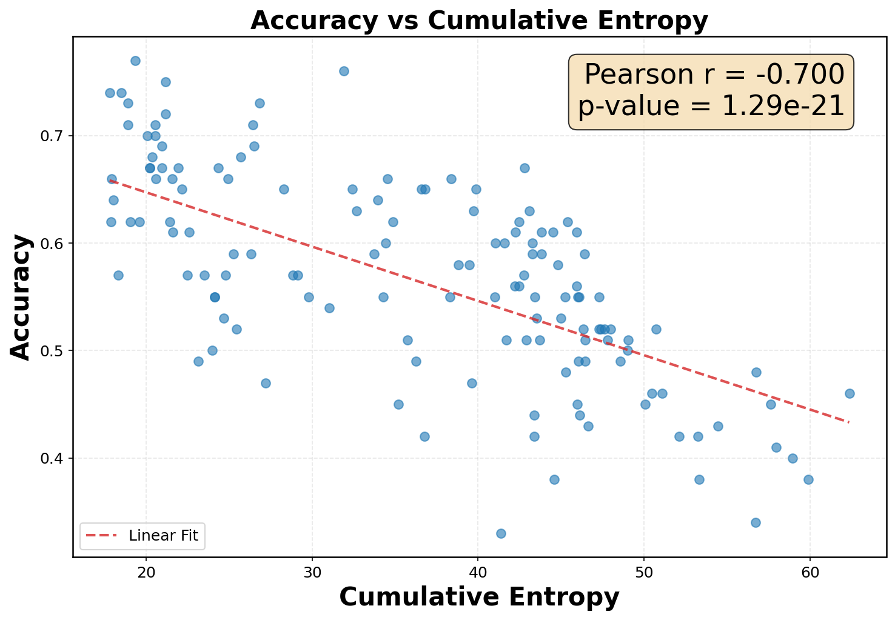
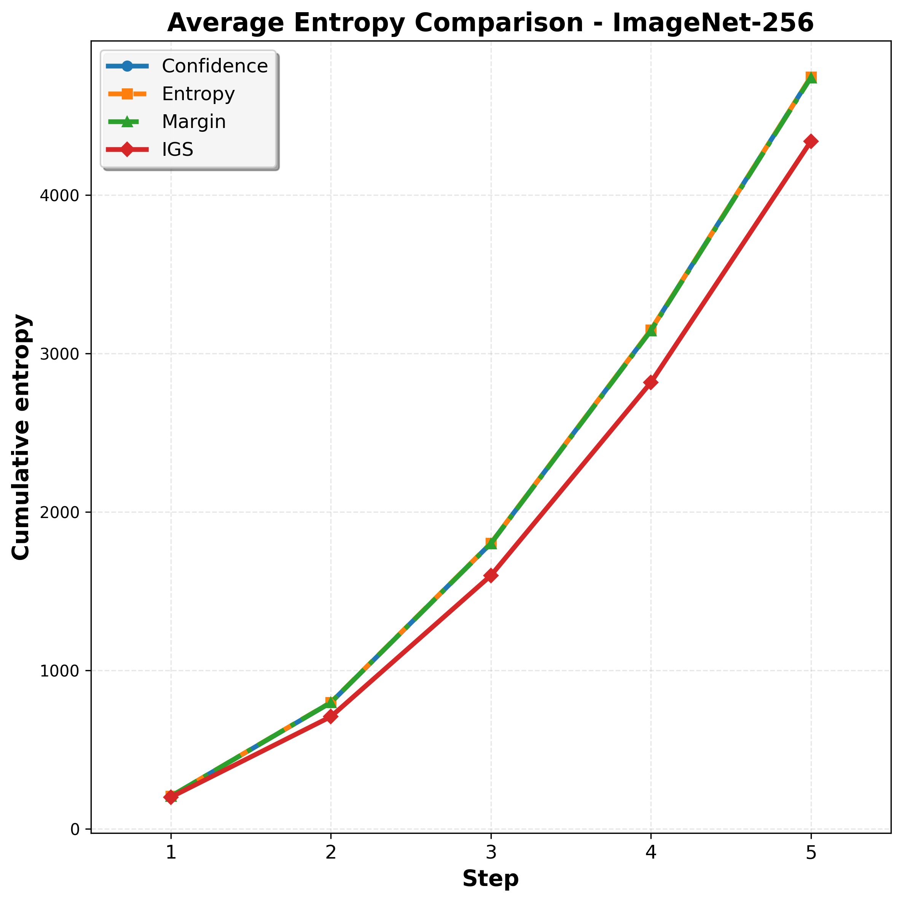
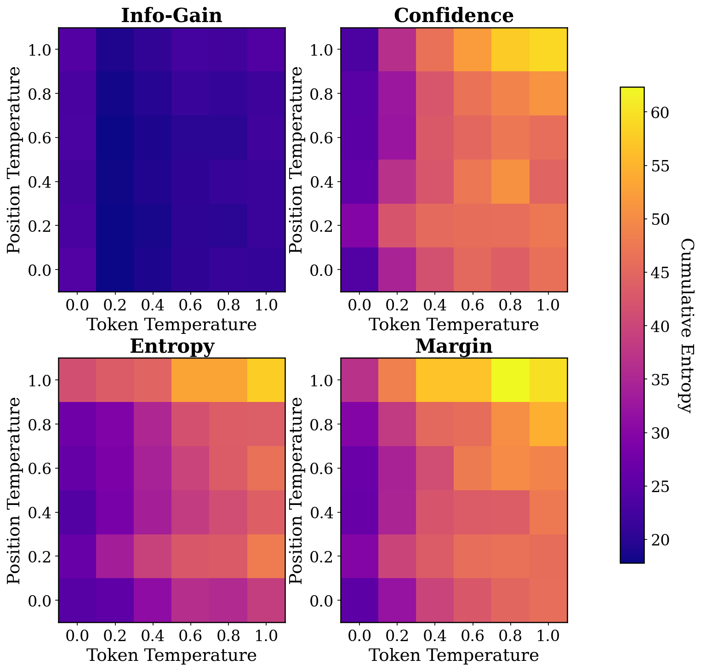

Reasoning · Avg. Pass@1
+11.6 pp
Largest gain on Semi-AR MDMs
On SDAR-8B-Chat (K=2), Info-Gain pushes average accuracy from 45.1% (LookUM) to 55.8%, an absolute +10.7 pp over the strongest concurrent lookahead baseline.
1Tsinghua University · 2Singapore Management University · 3Shanghai Jiao Tong University · 4Beihang University
Masked Diffusion Models (MDMs) offer greater flexibility in decoding order than autoregressive models, but require careful planning to achieve high-quality generation. Existing samplers typically adopt greedy heuristics, prioritizing positions with the highest local certainty. Through failure-case analysis, we identify a fundamental limitation: such samplers neglect the downstream impact of current decoding choices and fail to minimize cumulative uncertainty.
We propose the Info-Gain Sampler, a principled, training-free decoding framework that balances immediate uncertainty with information gain over future masked tokens. Across reasoning, coding, creative writing, and image generation, Info-Gain Sampler consistently outperforms prior greedy baselines — including a concurrent lookahead method — while keeping practical overhead minimal.
Five headline numbers from the paper.
On SDAR-8B-Chat (K=2), Info-Gain pushes average accuracy from 45.1% (LookUM) to 55.8%, an absolute +10.7 pp over the strongest concurrent lookahead baseline.
On reasoning tasks, cumulative entropy H̃ drops from 78.4 to
48.6 — only ~50% of the best greedy baseline. Lower H̃ correlates with higher accuracy
(Pearson r = −0.70).
Across temperatures and configs, Info-Gain wins 63.1% of head-to-heads on AlpacaEval, peaking at 80.3% against Entropy at high stochasticity (τ = 1.5).
On MMaDa with τ=0.4, Info-Gain raises GenEval avg. to 58.2 and improves ImageNet-512 FID by 5.2 points and IS by 9.7 points.
Acceleration via threshold γ = 0.8 keeps generation time within +24% and GPU
memory within +20% of greedy samplers — no extra training, no KV-cache surgery.
“Bidirectional attention lets MDMs look ahead. Greedy samplers throw that gift away. Info-Gain spends a tiny budget asking: which token, once revealed, makes the rest of the sequence easier?”
Score each candidate by immediate cost plus expected future information gain.

Confidence/Entropy/Margin samplers commit to the locally easiest token at every step. They never ask: “if I commit here, do the other masks become easier or harder?” In MDMs, where attention is bidirectional, that question is cheap to answer.
For each candidate decoding action a, score it by the reduction in expected uncertainty
over the remaining masked tokens after committing a. Combine this future term with the
usual immediate certainty term and pick the highest-scoring action.
Best in bold. All numbers from the paper.
SDAR-8B-Chat with block size 16, τtoken=0.7. H̃ = cumulative entropy (lower is better).
| K | Sampler | GSM8K | MATH500 | HumanEval | MBPP | Avg. ↑ | H̃ ↓ |
|---|---|---|---|---|---|---|---|
| 2 | Entropy | 42.2 | 24.4 | 26.2 | 20.6 | 28.4 | 238.6 |
| Confidence | 47.2 | 36.6 | 24.4 | 20.2 | 32.1 | 204.1 | |
| Margin | 45.2 | 22.4 | 19.5 | 19.8 | 26.7 | 230.9 | |
| KLASS | 50.4 | 32.3 | 30.7 | 26.6 | 35.0 | 210.3 | |
| LookUM | 75.3 | 44.9 | 28.2 | 31.8 | 45.1 | 103.2 | |
| Info-Gain | 82.7 | 54.6 | 46.3 | 39.4 | 55.8 | 74.1 | |
| 1 | Entropy | 68.8 | 44.6 | 37.8 | 49.0 | 34.9 | 120.4 |
| Confidence | 67.9 | 51.4 | 42.1 | 46.2 | 51.9 | 117.4 | |
| Margin | 65.3 | 40.2 | 32.3 | 43.2 | 45.3 | 138.2 | |
| KLASS | 69.9 | 42.3 | 45.7 | 46.6 | 51.1 | 105.3 | |
| LookUM | 80.3 | 60.0 | 38.2 | 39.8 | 54.6 | 53.7 | |
| Info-Gain | 87.9 | 61.8 | 62.2 | 53.0 | 66.2 | 41.0 |
τtoken=0.4, 50-step cosine scheduler.
| Method | Single ↑ | Two ↑ | Count ↑ | Color ↑ | Pos ↑ | Attr ↑ | Avg ↑ |
|---|---|---|---|---|---|---|---|
| Uniform | 94.1 | 66.7 | 38.4 | 78.2 | 19.0 | 28.8 | 54.2 |
| Entropy | 94.3 | 67.3 | 46.0 | 79.9 | 17.8 | 26.8 | 55.3 |
| Confidence | 93.8 | 69.7 | 46.3 | 81.9 | 16.0 | 27.0 | 56.0 |
| Margin | 94.0 | 68.7 | 47.3 | 80.1 | 19.0 | 29.0 | 56.3 |
| Info-Gain | 97.5 | 68.7 | 47.5 | 79.8 | 25.0 | 32.0 | 58.2 |
Length-controlled win-rate against three baselines on AlpacaEval (SDAR-8B-Chat).
| τ | K | vs Confidence | vs Entropy | vs Margin |
|---|---|---|---|---|
| 0.5 | 1 | 65.8 | 59.1 | 63.6 |
| 2 | 68.9 | 70.4 | 64.7 | |
| 1.0 | 1 | 57.7 | 60.1 | 55.2 |
| 2 | 61.1 | 65.7 | 57.5 | |
| 1.5 | 1 | 53.0 | 60.3 | 54.6 |
| 2 | 70.1 | 80.3 | 66.8 |
Why cumulative entropy is the right signal — and how Info-Gain reshapes the trajectory.




@article{yang2026improving,
title = {Improving Sampling for Masked Diffusion Models via Information Gain},
author = {Yang, Kaisen and Teoh, Jayden and Yang, Kaicheng
and Zhang, Yitong and Lamb, Alex},
journal = {arXiv preprint arXiv:2602.18176},
year = {2026}
}